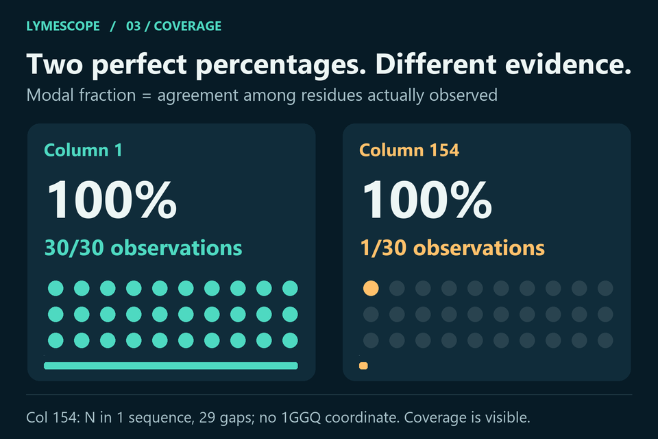

Question
Does agreement within this panel coincide with predictability of the observed residue from its sequence context?
One percentage can represent thirty agreeing sequences—or a single observation. Explore a selected cross-species OspC panel, its experimental coordinates and the limits of what we know.
Personal Spark: 6,305 real masked-residue scores · Event benchmark: NOT RUNAcross 202 fully covered columns (F), agreement versus predictability has descriptive Spearman rho 0.134696. This is not a significance test. The 239 overlapping panel perturbations assess sensitivity, not a population confidence interval.


Scientific findings · Typed source data · Current v2 comparison

Motion is optional. Stop returns to a readable static preview; changing scenes also stops motion. Original assets and provenance
Orange is the modal amino-acid fraction among standard residues. Teal is the fraction of all 30 sequences that contribute. They answer different questions.
Columns 154 and 173 each have 1/30 coverage. Both stay alignment-only: no reference residue or coordinate is invented.
Does agreement within this panel coincide with predictability of the observed residue from its sequence context?
Full 33-token conditional probability; original natural residues only. This is neither an entropy nor a substitution-effect score.
Kumaran et al., 1GGQ structure · Eicken et al., 1G5Z structure. Experimental structures support correspondence; they do not establish protection.
Convenience sampling, related sequences and a fixed alignment affect this descriptive comparison. Unobserved coordinates, reference gaps and predicted processing stay explicit.
Columns 177/58 and 129/137 show opposite agreement/predictability rank differences in all 239 recorded subsets. Follow-up should examine sequence context and panel dependence; this does not establish mechanism or protection.
| Author residue | AA | Native position | Alignment column | Coordinates | Modal fraction | Coverage | Nearest other-chain Cα | Panel column NLL (nats) |
|---|
Distances use only observed Cα positions. Missing/unmapped states remain explicit. A Cα contact proxy does not measure solvent accessibility, antibody accessibility or protection.
Batch size 8 within each full-length sequence; float32, eager attention, TF32 disabled. Three warm-up forwards (24 examples) are separate: 808 total forwards. Model load plus CUDA transfer: 0.313129 s; first forward: 0.237833 s. Process time after imports through validation/export: 10.510127 s. This is not complete launch-to-result workflow timing.
Personal Spark host spark-6771 / NVIDIA GB10. Published 16-test suite passed on that runtime; local import tests are separate. No matched event-cluster speedup has been measured.
Personal real-model pilot and full panel: COMPLETED Event one-node: NOT RUN Event two-node: NOT RUN
Venue plan: Spark30 performs all 6,305 masks / 805 calls; concurrent Spark29 and Spark30 shards perform 3,156 / 3,149 masks and 403 / 402 calls. This is independent task throughput, not NCCL/RDMA or model parallelism. Exact venue contract.
Masked pseudo-perplexity is exp(mean NLL over all original residues), not an autoregressive sequence likelihood. It is separate from column means.
| Source accession | Scored positions | Mean NLL (nats) | Masked pseudo-perplexity |
|---|
The frozen alignment, input sequences, coordinates and original results remain unchanged. This overlay consumes the pinned personal-Spark release and its current v2 comparison, alongside preserved baseline annotations. Contact geometry, calculated SASA, agreement and masked NLL remain separate. It does not establish antigen safety or efficacy.